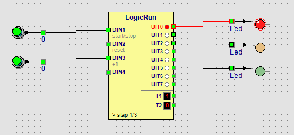

Leerpad › Voor gevorderden › Les 12 van 18

Dubbelklik op het blok: het LogicRun-venster gaat open. Het programma heeft drie stappen:
| Stap | Aan | tijd x | Duur (stapduur 500 ms) |
|---|---|---|---|
| 1 | UIT0 (rood) | 6 | 3 seconden |
| 2 | UIT2 (groen) | 6 | 3 seconden |
| 3 | UIT1 (oranje) | 2 | 1 seconde |
Omdat Herhalen aan staat, begint het programma na stap 3 weer bij stap 1.
Laat het groene licht 5 seconden branden in plaats van 3. Voeg daarna een voetgangerslicht toe: een groene led op UIT3 die alleen brandt als het verkeerslicht rood is.
Met een stapduur van 500 ms zijn 5 seconden 10 keer de stapduur: zet bij stap 2 tijd x op 10. Klik in stap 1 (rood) ook het rondje van UIT3 aan. Zet een lamp op het paneel, maak er met de rechtermuisknop een groene led van (Kleur › Groene led) en leg een draad van UIT3 naar die led. Zo stuurt één programma meerdere leds tegelijk.